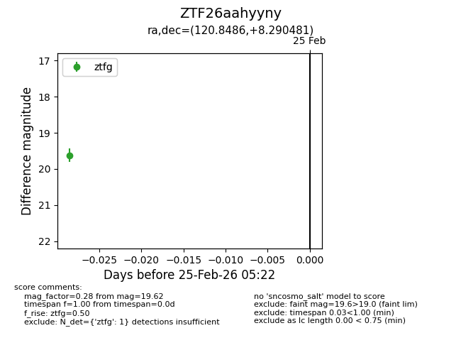
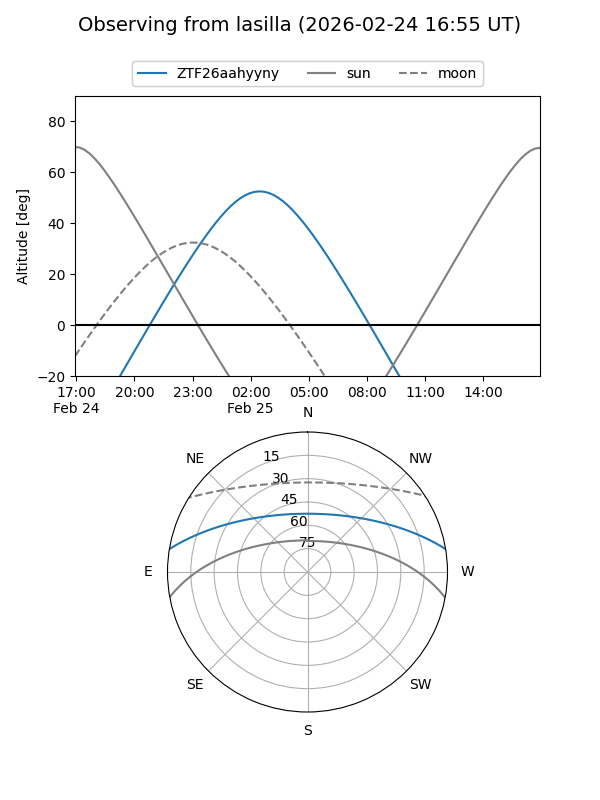
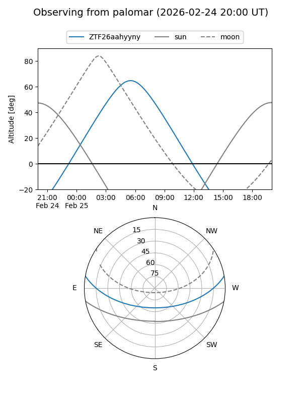

ZTF26aahyyny
Target ZTF26aahyyny at 2026-02-25 05:24
Aliases and brokers:
FINK: link
Lasair: link
ALeRCE: link
alt names
ZTF26aahyyny (ztf,fink_ztf)
Coordinates:
equatorial (ra, dec) = 120.8486,+8.29048
equatorial (HMS+DMS) = 08:03:23.65,+08:17:25.73
galactic (l, b) = (213.6030,+19.73905)
Flags:
Photometry:
last ztfg=19.62
1 ztfg detections
Lightcurve

Visibility


Additional plots